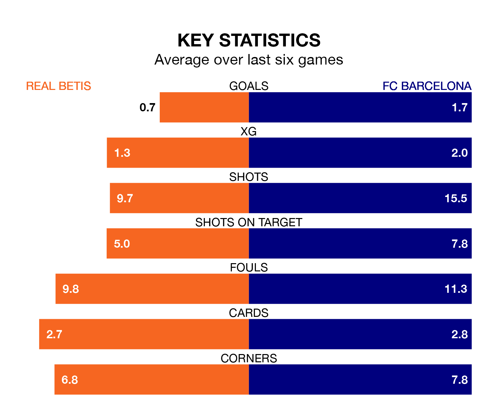

FC Barcelona are strong favourites to take all three points despite Real Betis's home advantage in Sunday's late match at the Estadio Benito Villamarín.
*Betting Company* are offering odds of 1.71 on Barcelona sealing the win, with the visitors sitting fourth in La Liga table.
Betis, who are seventh in the league and 10 points behind Barcelona, are priced at 3.95 to win. A draw is set at 3.72.
With 36 goals in 19 games so far this season, Barcelona are scoring more than average in the league with 1.9 goals per game. And they are conceding fewer than average, letting in 22 goals at a rate of 1.2 per game.
Betis, meanwhile, are below average scorers, with 1.1 goals per game, compared to a league average of 1.3. They have conceded 1.0 goal per game.
In the last 10 years, Betis and Barcelona have played each other on 19 occasions. Betis won two of them, Barcelona 15, and they drew twice.
On average, Betis scored 1.2 goals and Barcelona 3.2 in those matches.
Their last meeting was on September 16, when Barcelona won 5-0 at home.
With Marc-André ter Stegen between the sticks, Barça can rely on one of the league's safest pair of hands. He has kept six clean sheets in his 13 appearances this season in La Liga.
In the hosts' net, Rui Silva has five clean sheets in 11 games. He has conceded a goal every 95 minutes, only slightly more often than the 98 minutes between goals for ter Stegen.
Betis are in mixed form in La Liga, with one win and four draws from their last six games.
With three wins and two draws over that period, the away team's form is better – they have taken 11 points from 18, compared to Betis's seven.
Betis's last match was on January 13, a 1-0 win against Granada CF, with Isco getting the goal for Betis.
Barcelona beat UD Las Palmas 2-1 last time out, on January 4, with Ferrán Torres and İlkay Gündoğan on the scoresheet.
Updated: 14:53 (UTC), 16/01/24